01 / A folder becomes an instrument
Recommended: shows the input, the transformation, and the playable result at a glance.
Make exploring sample packs easier—and a lot more fun.
Turn a folder of one-shots into a rack you can play, tweak, and explore. Hear your samples together, swap sounds as you go, and find combinations worth building a track around.

02 / Same beat, new sounds
Shows the creative payoff: keep your pattern playing while exploring different samples.
Make exploring sample packs easier—and a lot more fun.
Turn a folder of one-shots into a rack you can play, tweak, and explore. Hear your samples together, swap sounds as you go, and find combinations worth building a track around.
